自家製天然酵母のパン MARU
まあるく、ゆっくり、ふくらむ時間をまちの食卓へ。
※このキャッチコピーは制作側のイメージで、店舗の公式な言葉ではありません。
お店について
日立市相田町の住宅街にある、自家製の天然酵母を使ったパンのお店です。2024年12月21日にオープンしました。
運営は、福祉・介護事業を手がける会社(株式会社いろは)と紹介されています。地域に根ざした会社が、まちの人のために焼くパン屋という成り立ちです。
天然酵母のパンは、時間をかけて発酵させるため奥深い味わいになると紹介されています。
店名「MARU」の意味や創業の想いは確認できていません。「まあるい」イメージは制作側のものです。
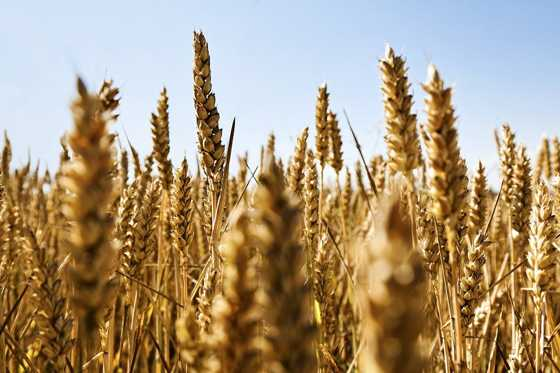
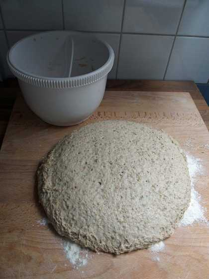
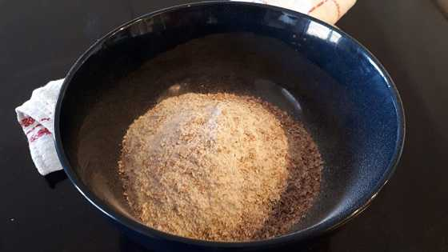
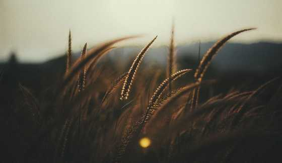
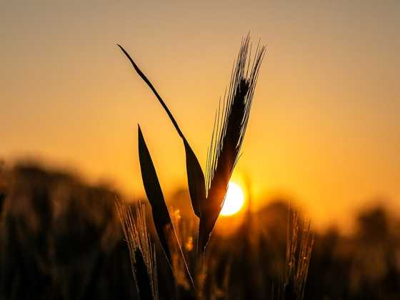
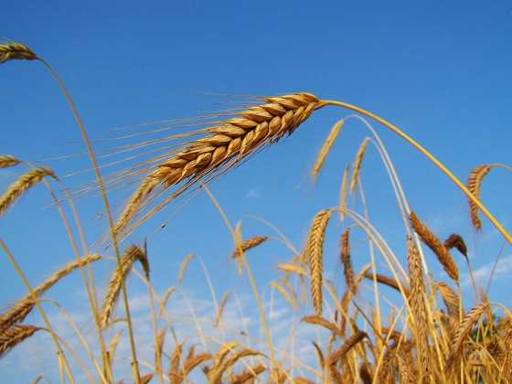
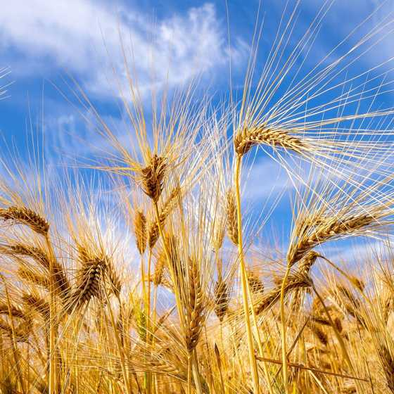
パンとメニュー
自家製天然酵母のパンを扱っています。種類・価格・営業時間は準備中です。最新情報はInstagramでご確認ください。
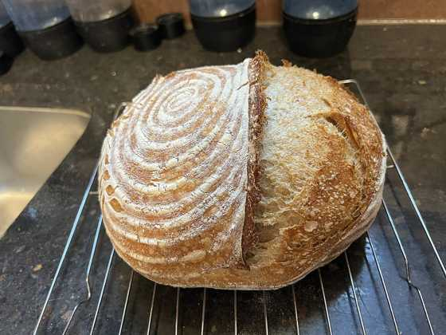
天然酵母のパン
お店の主役。内容は準備中です。
詳細は準備中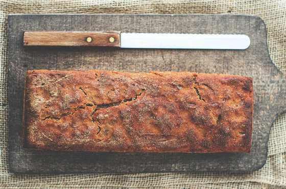
ハード系・田舎風
イメージ写真です。実際の品揃えは準備中です。
詳細は準備中
焼きたてのパン
イメージ写真です。実際の品揃えは準備中です。
詳細は準備中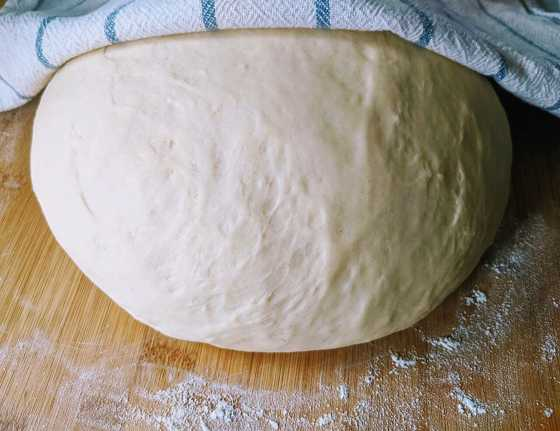
生地づくり
時間をかけて発酵させるイメージ。
詳細は準備中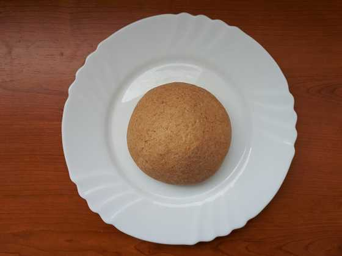
ふくらむ生地
イメージ写真です。
詳細は準備中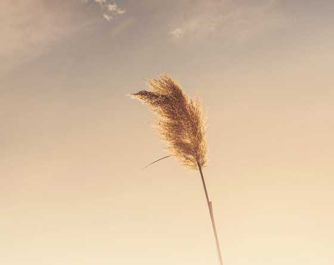
麦と粉
イメージ写真です。
詳細は準備中なお、第三者のブログでは、バスクチーズケーキ、レーズンパンなどの購入が紹介されています(時期により変わる可能性があります)。
口コミ(イメージ例)
住宅街でふと見つけて立ち寄りました。噛むほどに味が出るパンで、朝ごはんが楽しみになります。
ゆっくり発酵させたようなやさしい香り。家族みんなで分けて食べました。
近所にこんなパン屋さんがあるのはうれしいです。売り切れる前に行きたくなります。
※制作側が作成した例文で、実在のお客様の声ではありません。
アクセス
- 店名
- 自家製天然酵母のパン MARU
- 住所
- 〒319-1415 茨城県日立市相田町3丁目27-4
- 電話
- 準備中
- 営業時間
- 準備中
- 定休日
- 準備中
- @marupan_1113(外部サイトが開きます)
写真クレジット
- bread-loaf.jpg: Agelaia / CC BY 4.0(出典 Wikimedia Commons)
- wheat-field-1.jpg: Dominik Bartsch / CC BY 2.0(出典 Wikimedia Commons)
- bread-board.jpg: Artur Rutkowski / CC0(出典 Wikimedia Commons)
- dough-board.jpg: Gageills / CC0(出典 Wikimedia Commons)
- rye-ears.jpg: Tappancs / CC0(出典 Wikimedia Commons)
- bread-rounds.jpg: Kritzolina / CC BY-SA 4.0(出典 Wikimedia Commons)
- flour-bowl.jpg: Magnussoder / CC BY-SA 4.0(出典 Wikimedia Commons)
- bread-epi.jpg: Jberkel / CC0(出典 Wikimedia Commons)
- dough-plate.jpg: Fructibus / CC0(出典 Wikimedia Commons)
- dough-rise.jpg: Kotivalo / CC0(出典 Wikimedia Commons)
- grass-ear.jpg: Jez Timms / CC0(出典 Wikimedia Commons)
- wheat-field-2.jpg: Johan Neven / CC BY 2.0(出典 Wikimedia Commons)
- wheat-dusk.jpg: Cezanne Ali / CC0(出典 Wikimedia Commons)
- wheat-sunrise.jpg: Dietmar Rabich / CC BY-SA 4.0(出典 Wikimedia Commons)
写真はフリー素材のイメージで、店舗の実際の様子ではありません。